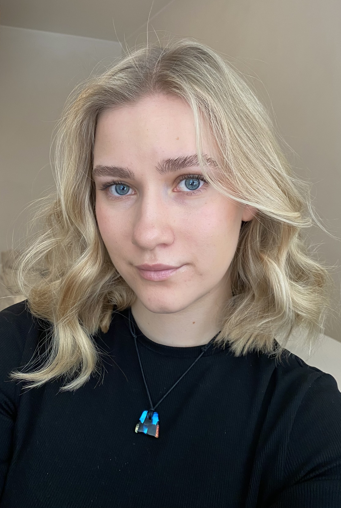

Digitaalinen portfolio
Fanny Marjakangas
Olen 21-vuotias nuori nainen ja vahvuuksiin kuuluu innostus oppia jatkuvasti uutta sekä kyky kohdata erilaisia ihmisiä avoimin mielin. Olen luonteeltani ratkaisukeskeinen ja ongelmatilanteissa löydän usein toimivia ratkaisuja. Minulla on oivaltava tilannetaju, mikä auttaa minua navigoimaan haasteiden läpi. Odotan innolla, mitä mahdollisuuksia tulevaisuuteni tuo minulle vastaan ja lähden niihin avoimin mielin.
